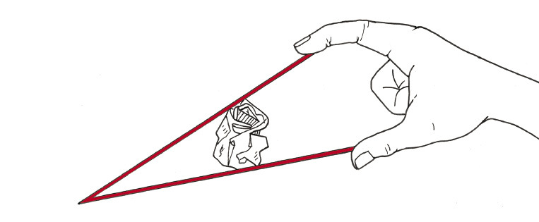
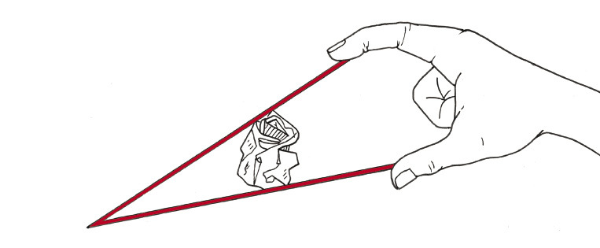
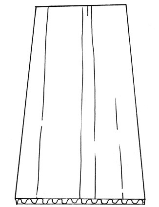
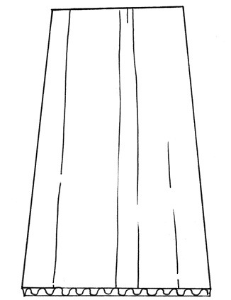

Ander hefboomklasse
 
 
 Figuur 3: Beide stukke karton is in die middel gevou om vere te vorm. Die kante is omgevou om flense te vorm.
Figuur 5
Die steunpunt van die hefboom is aan die regterkant van die potlood, waar dit op die lessenaar rus. Merk die insetkrag met 'n pyltjie op die skets hierbo. Waar is die las? ?
In figuur 5 is die insetkrag aan die een kant van die hefboom, en die steunpunt aan die ander kant. Hoe verskil 'n klas 1-hefboom hiervan?
Druk die potlood met een vinger afwaarts aan die skerp kant en probeer jou vinger oplig deur die potlood in die middel op te lig, soos hieronder gewys.
Figuur 6
Die steunpunt van die potlood is aan die linkerkant van die hefboom, waar dit op die lessenaar rus. Merk die insetkrag met 'n pyltjie op die skets hierbo. Waar is die las?
In die geval hierbo is die las aan die een kant van die hefboom en die steunpunt aan die ander kant. Hoe verskil die situasie op die vorige bladsy hiervan?
In die geval hierbo het jy die potlood as 'n klas 3-hefboom gebruik. Op die vorige bladsy het jy die potlood as 'n klas 2-hefboom gebruik.
Om 'n potlood as 'n klas 1-hefboom te gebruik moet jy 'n ondersteunende punt iewers tussen die twee eindpunte plaas om as steunpunt op te tree.
Figuur 7
Doen weer die eksperimente op die vorige twee bladsye. In watter geval kry jy die grootste meganiese voordeel: wanneer jy die potlood gebruik as 'n klas 2-hefboom of wanneer jy dit as 'n klas 3-hefboom gebruik?
'n Ander woord vir steunpunt is spilpunt.
- Hefbome soos hierdie een, waar die steunpunt tussen die insetkrag en die las is, word klas 1-hefbome genoem.
- Wanneer die las tussen die insetkrag en die steunpunt is, word dit 'n klas 2-hefboom genoem.
- Wanneer die insetkrag tussen die las en die steunpunt is, word dit 'n klas 3-hefboom genoem.
Figuur 11
Is sy voorarm en die hamer 'n klas 1-hefboom, 'n klas 2-hefboom of 'n klas 3-hefboom?
Kan jy aan 'n sport dink waar 'n deelnemer 'n voorwerp swaai om iets te slaan?
Laat rus jou regterelmboog op die lessenaar en tel dan iets met jou regterhand op terwyl jy jou elmboog op die lessenaar hou.
Doen dit weer, maar hou hierdie keer jou linkerhand liggies op jou regterarm, net bo jou elmboog.
Voel jy die spierbeweging binne jou arm?
Figuur 12
Die diagram hieronder verduidelik die werking van jou arm.
Figuur 13
Wanneer jy iets in jou hand optel werk jou arm soos 'n klas 3-hefboom , en is die insetkrag tussen jou elmboog en jou hand. Jou elmboog tree as 'n steunpunt (spilpunt) op en die las is in jou hand.
Trek in elk van die prente hieronder 'n klein driehoekie om te wys waar die steunpunt (spilpunt) is, en 'n pyltjie om te wys waar die insetkrag is. Sê ook in elke geval watter klas hefboom dit is.
Figuur 14

Figuur 15
'n Maklike manier om te onthou hoe 'n klas 2-hefboom werk is om aan 'n kruiwa of 'n neutkraker te dink.

Figuur 17
Figuur 18
Maak vryhandsketse om die twee maniere waarop jou hefboom gebruik kan word te illustreer.
Gebruik jou hefboom en sandboksie en ondersoek in watter geval jy die grootste meganiese voordeel kry: met 'n klas 2-hefboom of met 'n klas 3-hefboom. Skryf 'n kort verslag daaroor hieronder.